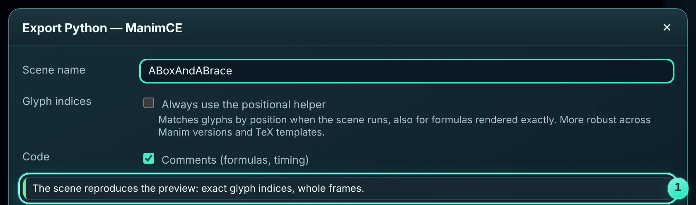
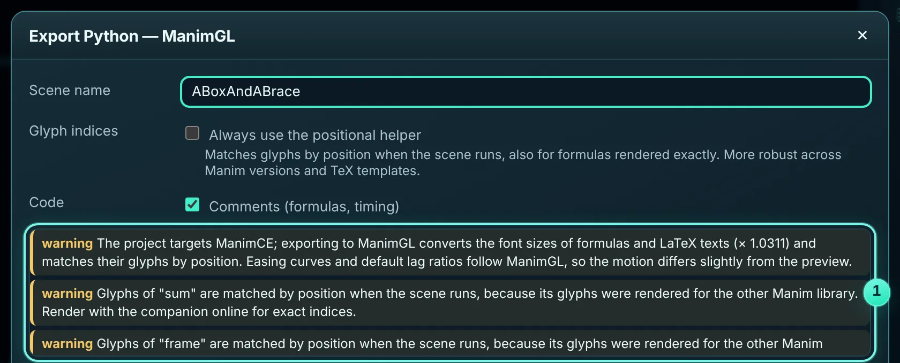

ManimCE and ManimGL
The editor exports for two versions of Manim. They share one idea and differ in many details: what the code looks like, how some animations move, how a video is timed. This page says where, helps you choose, and links to the installation of each.
Two Manims
- ManimCE is Manim Community Edition: the version maintained by a
community of contributors, with documentation of its own. You install it with
pip install manimand writefrom manim import *. The editor writes for ManimCE 0.22. - ManimGL is the version 3Blue1Brown writes his videos with. It draws
with OpenGL and can play a scene in an interactive window. You install it with
pip install manimgland writefrom manimlib import *. The editor writes for ManimGL 1.7.
The editor’s Preview mirrors each of them: its easing curves, its lags and its sizes follow the library of the project. You set that in File ▸ Project settings…, under Manim target: ManimCE (Community Edition), the default, or ManimGL (3b1b). The arrow of the Export… button offers both libraries whatever the project’s is, and the editor converts what differs.
Switch the tabs above to compare the two files. The rest of the page is a guide to what you see.
Which one to use
| If… | Use |
|---|---|
| You already work with one of them | That one. Export for it, and the scene runs in the project you have. |
| You have neither and want to start | ManimCE: a new project is made for it, so it is the library the Preview mirrors by default. |
| You follow 3Blue1Brown’s code, or want an interactive window to play with the scene | ManimGL. |
| You are not sure | Export both. The two files come from one project, and the dialogs say what each will do. |
| You have decided | Set the Manim target of the project to that library: the Preview then moves as it will, and the export needs no conversion. |
For the formulas and the transformations the two give the same picture. The differences below are in details of the code and in a few effects.
What differs in the code
The table shows the same scenes exported twice. The first six rows come from the scene of The generated Python, the next four from the scene above.
| What | ManimCE | ManimGL |
|---|---|---|
| The import | from manim import * | from manimlib import * |
| The command in the header | manim -r 1920,1080 --fps 60 SceneToRead.py SceneToRead | manimgl SceneToRead.py SceneToRead -w -r 1920x1080 --fps 60 |
| The background | self.camera.background_color = "#000000", in construct | default_camera_config = dict(background_color="#000000"), in the class |
| A formula | MathTex(r"2x + 1 = 7", font_size=96) | Tex(r"2x + 1 = 7", font_size=98.9888) |
| The intro Write | Write(VGroup(*step1_g[:])) | Write(VGroup(*step1_g[:]), stroke_color="#FFFFFF") |
| One glyph leaving | FadeOut(step2_g[0]) | FadeOut(VGroup(step2_g[0])) |
| The intro Create | Create(frame) | ShowCreation(VGroup(frame_g[0])) |
| A rounded box | SurroundingRectangle(sum[0][:5], buff=0.15, color="#FFFF00", corner_radius=0.12) | SurroundingRectangle(VGroup(*sum_g[:5]), buff=0.15, color="#FFFF00").round_corners(0.12) |
| A brace and its colour | Brace(frame, DOWN, buff=0.2, color="#58C4DD") | Brace(frame, DOWN, buff=0.2), then under.set_color("#58C4DD") |
| A size | font_size=60 | font_size=61.868 |
And a few more that the examples above do not show:
| What | ManimCE | ManimGL |
|---|---|---|
| A glyph by its exact index | poly[0][3:5].set_color("#FFFF00") | poly[3:5].set_color("#FFFF00") |
| A Copy pair | ReplacementTransform(f1_g[0].copy(), f2_g[0]) | TransformFromCopy(f1_g[0], f2_g[0]) |
| A LaTeX text | Tex(r"A brace on text", font_size=40, color="#83C167") | TexText(r"A brace on text", font_size=40), then title.set_color("#83C167") |
| The size of a font text | font_size=56 | font_size=82.1968, which is 56 × 1.4678 |
| The alignment of a font text | None written. | alignment='LEFT' |
| The outro Unwrite | Unwrite(…), Manim’s own | _Unwrite(…), a small class in the file that plays a Write backwards: ManimGL has no Unwrite |
| A scene with a camera | class Pinned(MovingCameraScene): | class Pinned(Scene):, whose frame can move already |
- The size. At the same
font_sizea ManimGL formula comes out slightly smaller than a ManimCE one, by a factor of about 1.031. When you export a project for the other library the editor multiplies the size by that factor (96 becomes 98.9888), so the formula keeps the size you see in the Preview. - Glyph references. A formula that the editor drew exactly (with the
companion) is named by index in the library it was drawn for:
sum[0][:5]in the ManimCE file above. A formula drawn for the other library, or by MathJax, goes through the positional helper, which both libraries use the same way (How the scene finds the glyphs). In the scene above the ManimCE file is exact and the ManimGL file has the helper, for that reason. - Groups. ManimGL counts a group as one more slot in the stagger of an
animation, so the exported code wraps even a single glyph in
VGroup(…)to keep the animation as the Preview draws it. ManimCE takes the glyph as it is. - Packages and preamble. The LaTeX packages of a formula and the
project’s LaTeX preamble (in File ▸ Project
settings…) go through a
TexTemplatein ManimCE and throughadditional_preamblein ManimGL.
What differs in what you see
The Preview draws the behaviour of the project’s Manim target, and the editor’s tests compare scenes exported for each library with the frames Manim makes. A scene exported for the other library keeps your timeline but takes that library’s own easing curves and default lags, so its motion differs slightly from the Preview. These are the differences you can notice:
| Where | ManimCE | ManimGL |
|---|---|---|
| The smooth easing | A sigmoid curve. | A quintic polynomial. The same name, a slightly different ease. |
| The stagger of a Write over n glyphs | Lag ratio min(4/max(1, n), 0.2). | Lag ratio min(4/(n + 1), 0.2), and the group itself takes one more slot of the stagger. |
| The outline of a Write | Each glyph is traced in its own colour. | Every glyph is traced in one colour, which the exported call names (stroke_color). |
| Fade in with a scale | Starts at the scale you set. | Starts at its inverse. |
| The frames of a video | Each play is drawn at the start of every frame interval, as the editor’s video is. | Each play is drawn at the end of every frame interval: every instant shows one frame later, and the video ends on the final state. |
| A brace | Honours the sharpness you set. | Draws the brace from a font and ignores the sharpness; the dialog says so. |
| A font text | Comes out about 1.47 times as large at the same size. Its lines are 0.975 em apart whatever the font, and a tab is four spaces. | Spaces its lines by the font’s own line height and has tab stops of its own. |
The editor converts what it can: the size of a font text is converted from the library that shaped it, and the sizes of formulas as above. What it cannot convert is listed in the notes of the export dialog.
Exporting for the other library
Choose Export ▸ Python — ManimCE… or Export ▸ Python — ManimGL…: both are always on offer, whatever the Manim target of the project is. The two dialogs of the same project, made for ManimCE:


The first note of the second dialog says it plainly: The project targets ManimCE; exporting to ManimGL converts the font sizes of formulas and LaTeX texts (× 1.0311) and matches their glyphs by position. Easing curves and default lag ratios follow ManimGL, so the motion differs slightly from the preview. Read the notes of every export: they are the list of what a converted scene does not promise.
Installing each
Follow the official instructions for your system: they cover the libraries Manim needs
beyond Python. Both need a LaTeX installation with dvisvgm, because Manim
typesets formulas with LaTeX. ManimGL also needs ffmpeg to write a video file; ManimCE
brings its own, through the av package it installs.
| ManimCE 0.22 | ManimGL 1.7 | |
|---|---|---|
| Python | 3.11 or newer | 3.10 or newer |
| Install | python -m pip install manim | python -m pip install manimgl |
| Official guide | docs.manim.community | 3b1b.github.io/manim |
| Also needs | LaTeX; on some systems Cairo and Pango | LaTeX and ffmpeg; a graphics setup that supports OpenGL |
Running the same scene in both
# ManimCE: writes media/videos/SceneToRead/1080p60/SceneToRead.mp4
manim -r 1920,1080 --fps 60 SceneToRead.py SceneToRead
# ManimGL: writes the video into a videos folder (without -w it plays in a window)
manimgl SceneToRead.py SceneToRead -w -r 1920x1080 --fps 60Each command is in the header of the file exported for its library, already filled in
with the size and the frame rate of the project. For a quick preview, take
-r … and --fps … out and add the low-quality flag (ManimCE:
-pql, which also opens the video; ManimGL: -l), or lower those
two numbers: a quality flag added to the commands above changes nothing, because both
libraries apply -r and --fps after it. ManimGL also plays the
scene in its window when you leave out -w.